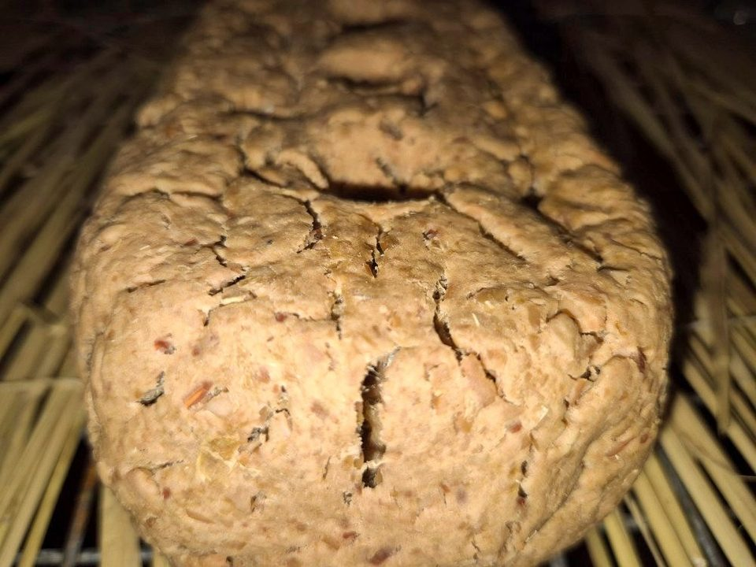
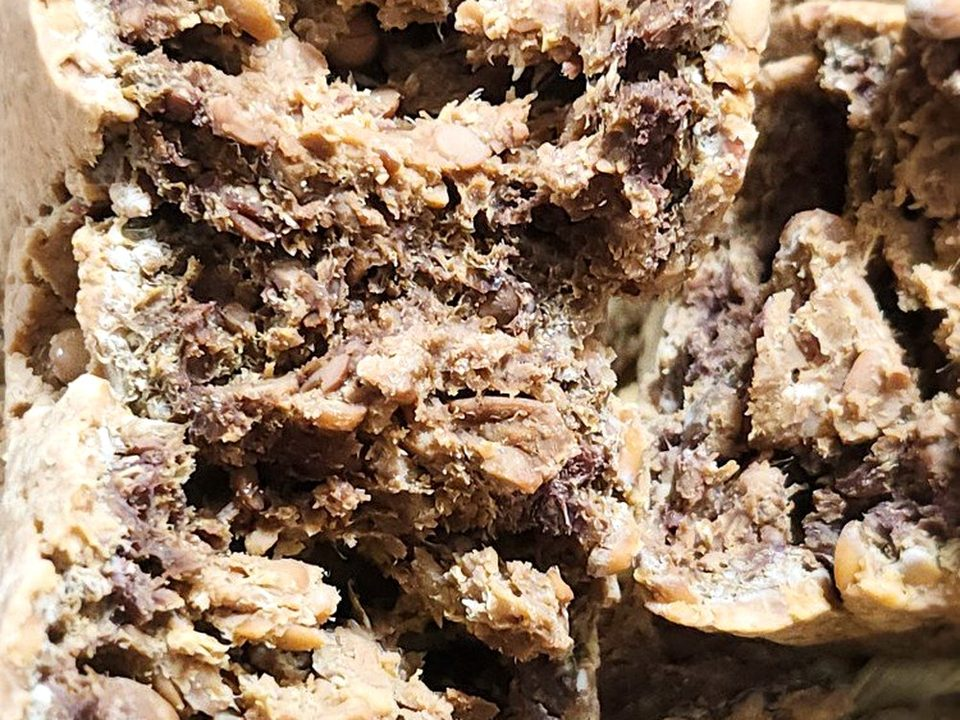
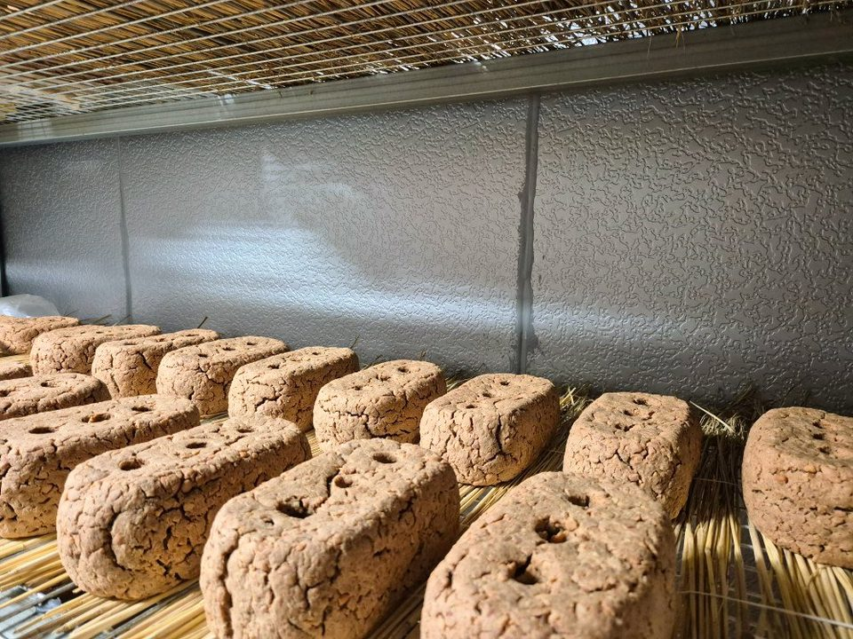
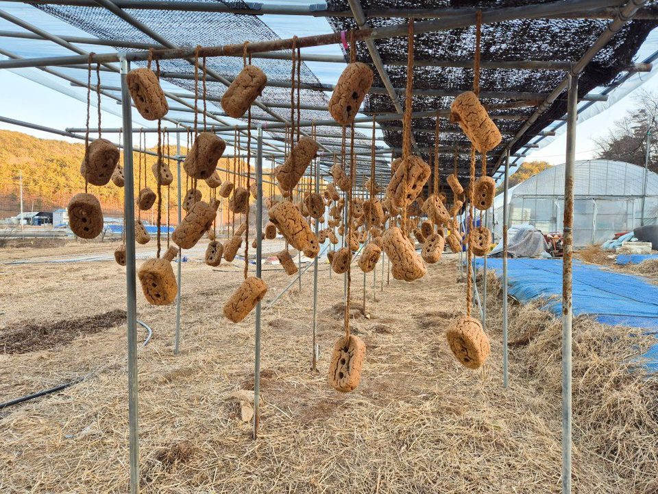
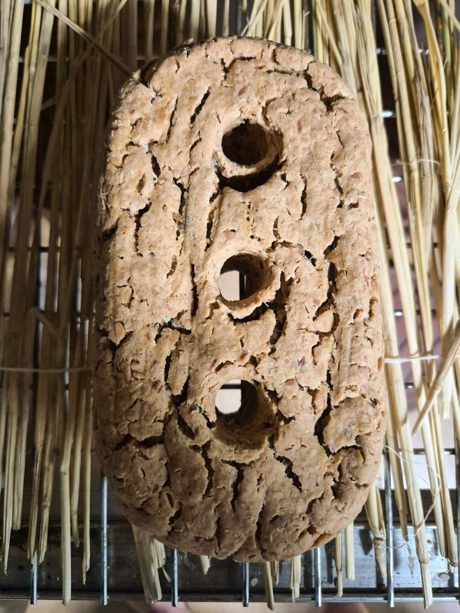

1 / 7
- 배송
- 택배 5,000원 · 100,000원 이상 무료
- 직접 수령
- 영동 농장 (충북 영동군 학산면)
- 주문 알림
- 주문 즉시 주문번호·결제 안내 문자
- 적립
- 회원 구매 시 2% 적립
총 상품 금액 (0개)0원

명품
발효의 진심
명품 메주
자연농법으로 직접 농사지은 콩으로 만든 명품 메주, 정직하고 맛있는 장을 담기 위한 마음입니다.
한눈에 보기
- 주원료
- 영동에덴원 메주콩
- 발효
- 발효실에서 약 15일
- 마무리
- 햇볕 들이기 · 바람치기
- 용량
- 1개
- 보관
- 습기 없고 서늘한 곳에 보관하세요. 대두 함유. 반품 및 교환방법 : 제품구입처 및 판매원. 본 제품은 공정거래위원회 고시 소비자분쟁해결기준에 의거 교환 또는 보상받을 수 있습니다. 부정불량 식품신고 : 국번없이 1399. 소비자 상담실 : 010-5126-7578, 010-8950-4335
STORY
발효에 진심인 정직한 고집
영동에덴원의 이름을 걸고, 콩의 선별부터 성형까지 모든 과정을 직접 책임집니다.
자연발효식초와 전통 발효 식품을 연구하며 얻은 데이터로, 최적의 메주 형태와 발효 조건으로 메주를 발효합니다. 정직하고 깊은 감칠맛의 장 맛을 제공한다는 마음으로 영동에덴원은 메주를 띄웁니다.
PROCESS
메주를 띄우는 과정

01 / 07
콩 선별 · 세척
영동에덴원이 자연농법으로 직접 농사지은 메주콩을 선별해, 깨끗이 씻습니다.
메주의 품질을 결정하는 첫 단계입니다.

02 / 07
가마솥에 콩 삶기
선별한 콩을 가마솥에 푹 삶아 메주를 쑤기 위한 준비를 합니다.

03 / 07
삶은 콩 마쇄하기
잘 삶아진 콩을 적당히 마쇄하여, 메주를 빚을 준비를 합니다.

04 / 07
메주 빚기
마쇄된 콩을 손으로 하나 하나 메주를 빚습니다.
영동에덴원 식구들이 함께 손으로 빚는 과정입니다.

05 / 07
발효실에서 메주 띄우기
최적의 환경으로 세팅된 발효실에서 메주를 띄워,
복합 미생물이 자연스럽게 자리 잡게 유도합니다.

06 / 07
바람 · 햇볕
잘 띄워진 메주를 매달아 바람에 건조를 시킵니다.
동시에 햇볕으로 살균하여, 미생물의 활동을 멈추게 합니다.

07 / 07
명품 메주
영동에덴원의 환경과 기술로 띄운 명품 메주의 모습입니다.
주문 후기
후기는 주문 단위로 남깁니다. 함께 주문한 상품이 있으면 그 상품의 후기에도 함께 보입니다.
첫 후기를 남겨 주세요.
상품정보제공고시
- 제품명
- 명품 메주
- 식품의 유형
- 한식메주
- 생산자 및 소재지 (수입품의 경우 생산자, 수입자 및 제조국)
- 농업회사법인 주식회사 에프엔엘바이오푸드 · 충청북도 영동군 학산면 모리2길 3-1
- 제조연월일, 소비기한 또는 품질유지기한
- 보관 방법에 따라 달라집니다(습기 없고 서늘한 곳에 보관). 정확한 기한은 전화로 안내해 드립니다: 010-5126-7578
- 포장단위별 내용물의 용량(중량), 수량
- 1개
- 원재료명 (「농수산물의 원산지 표시 등에 관한 법률」에 따른 원산지 표시 포함) 및 함량(원재료 함량 표시대상 식품에 한함)
- 대두(국내산) 100%
- 소비자 안전을 위한 주의사항 (「식품 등의 표시ㆍ광고에 관한 법률 시행규칙」 제5조 및 [별표 2]에 따른 표시사항을 말함)
- 보관방법 : 습기 없고 서늘한 곳에 보관하세요. 대두 함유. 반품 및 교환방법 : 제품구입처 및 판매원. 본 제품은 공정거래위원회 고시 소비자분쟁해결기준에 의거 교환 또는 보상받을 수 있습니다. 부정불량 식품신고 : 국번없이 1399. 소비자 상담실 : 010-5126-7578, 010-8950-4335
- 소비자 상담 관련 전화번호
- 010-5126-7578
배송·교환·환불
- 배송비
- 택배 5,000원 · 상품 합계 100,000원 이상 무료. 제주·도서산간은 배송비가 추가될 수 있습니다.
- 직접 수령
- 충청북도 영동군 학산면 모리2길 3-1 · 주중,주말 오전 9시~오후 6시, 방문 전 전화
- 교환·환불
- 교환·반품·환불 안내 보기
함께 담기 좋은 제품


2년 이상 숙성
옹기숙성 된장
20,000원300g · 100g당 6,667원
자가 재배 콩 · 천일염